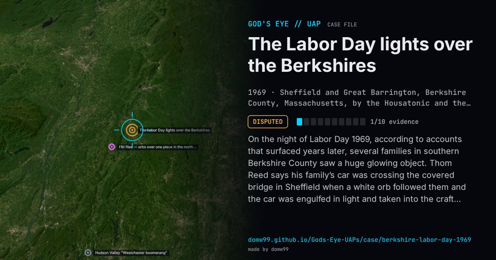

The Labor Day lights over the Berkshires

On the night of Labor Day 1969, according to accounts that surfaced years later, several families in southern Berkshire County saw a huge glowing object. Thom Reed says his family’s car was crossing the covered bridge in Sheffield when a white orb followed them and the car was engulfed in light and taken into the craft; Melanie Kirchdorfer says her family’s car was flooded with light at Lake Mansfield in Great Barrington and that she remembers being aboard a ship with other children. The Great Barrington Historical Society accepted the accounts, Sheffield opened a small UFO park by the river in 2015, and the case reached a wide audience in Netflix’s Unsolved Mysteries in 2020. Local journalists and historians remain doubtful.
Explanation
No record of any report made at the time, to the police or to a newspaper, has ever been found, although the event is now said to have had hundreds of witnesses. The “missing time” and the memories of being taken aboard came out years later. A governor’s citation calling it “historically significant and true” was signed in error, his spokesman said, after the main witness pressed his staff.
What was seen
Shape: A white orb “bigger than a football field”, and a beam of light
Witnesses: Thom Reed and his family; Melanie Kirchdorfer and her family at Lake Mansfield; Tom Warner; later said to be more than 250 people
Duration: Hours of “missing time”, by the witnesses’ accounts
Sources
- Wikipedia — September 1, 1969, Berkshire UFO incident
- The Independent — Berkshire UFO sightings: what happened next? (2020)
Browse
- United States
- 1960s
- Disputed
- Close encounters
- Many independent witnesses
- Lights and fireballs
- Spheres and orbs